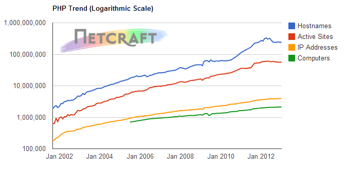

PHP
The slums of the
Programming World?
Why talk about PHP?
A short history of PHP
Written by Rasmus Lerdorf to replace repetitive coding CGI calls.
Replaced the original parser with the Zend Engine, Zend Engine 2.
"I've never thought of PHP as more than a simple tool to solve problems"
— Rasmus Lerdorf
Who uses PHP
- User facing portions of Facebook (through HipHop)
- Wordpress
- Yahoo (for now)
- Wikipedia / Mediawiki
Lies, Damned Lies and...
TIOBE Language Index
Web Language Trends

Framework Trends

PHP Framework Trends
PHP Usage
Web Jobs
Web Jobs Growth
Web Jobs Growth with Ruby
Embrace the Cactus
- Language
- Community
- Toolset
Language
Inconsistencies in naming functions:
strrev // String Function
str_repeat // String Function
explode // String Function
// At least somewhat consistent
strpos($haystack, $needle)
array_key_exists($needle, $haystack)
Potentially Insecure:
mysql_query("SELECT * FROM `users` WHERE `username` = $_GET['username']");
- PHP accounts for only 18% of applications covered by the CVE, but accounts for almost 29% of the vulnerabilities
- Not Object Oriented, just Object Capable
- Low barrier to entry?
Community
Bringing a knife to a gun fight is like bringing PHP to a modern web stack.
—@iamdevloper
Toolset
In general not too bad, but managing dependencies with PEAR is a pain.
Noteworthy tools / libraries:
- XDebug
- PHPUnit
- SwiftMailer
The flip side of the coin
- Language
- Community
- Toolset
PHP 5.3
- Namespaces
- Closures and Lambda functions
- Renewed focus on security by default
PHP-FIG
- It's been a bumpy ride... but worth it
- Unofficial
- Yet widely adopted
Composer / Packagist
- PEAR shaped
- Now we can manage dependencies and versions
- Dead simple:
composer require "vendor/library"
Modern Frameworks
- Symfony 2
- Zend 2
- Laravel
- Lithium
- PPI
So... Slums?

If you can pull it off, you’re badass as hell, but most of the time you’re only going to end up stabbing yourself. - @ohpalmer